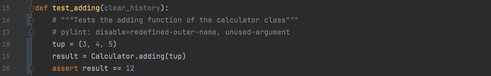
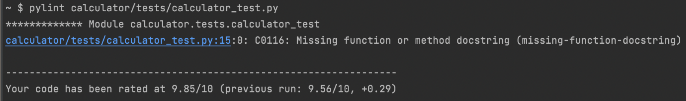
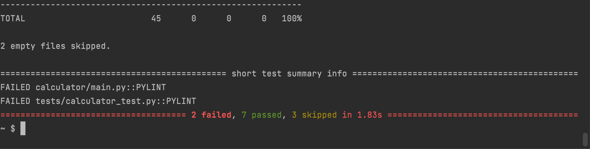
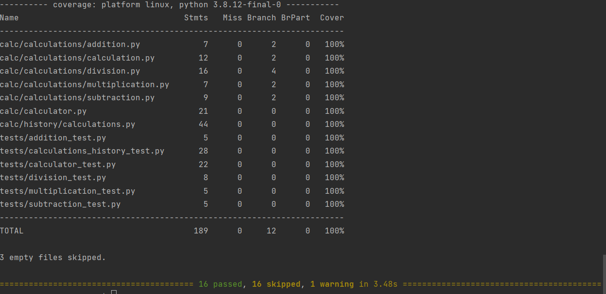

Object Oriented Programming
Understanding the OOP Concepts.
The OOP Glossary
This section contains important terms if you are learning object-oriented programming. Being able to speak the language of OOP is vital to troubleshooting issues in the industry.
Factory
An object which creates other objects, utilizing polymorphism to accomplish a task.
Instantiation
Creation of an object or an instance of a given class.
Object
Collection of various data and methods to operate on the data
Class
An outline or a blueprint in order to instantiate an object
Namespace
System to ensure that all "names" used within a program or code is unique
Constructor
A method used to instantiate an object, and usually involves assigning values to the object
Fixture
Used within pytest, defines a consistent context for function tests
Type Hint
Quite literally it's name,give Python a hint as to which type of object should be utilized when a program is run. Helps increase predictability with extremely large and complex programs
Type Cast
having the ability to specify the type of data Python should read information as, similar to type hinting with classes. Also having the ability to convert data types
Unit Test
Testing individual aspects of a program, such as specific functions and classes without running the full program
Static
A variable that is declared within a class, but outside a method. Is not directly attached to object creation
Class Method
A method that is bound to the class, but not the object of a class. Similar to static, except is a method.
Facade
A design pattern where a class would contain very simplified interface, and call to other complex functions behind the facade.
Design Patterns
A template on how to solve a problem within programming. In this course, the factory method and is utilized in conjunction with the facade.
Method
A function that is associated with a class or object
Property
The attributes that characterize a class. A set of methods which 'get' a value and 'set' the new value.
Decorator Method
A design pattern to structure code. Adds functionality to a class without directly changing it
Tuple
A common data structure that consists of a set of items with a specific order that are unchangeable
Pylint Explained
In Python, users typically follow the PEP8 style-guide. Pylint is a tool that aids in the unification of the python language and helps organize code in such a way that follows the style-guide, and also can detect errors, but also make suggestions to write better code. To begin the implementation, pylint first needs to be installed to the system, you can run the following command in terminal:
pip install pylint
When implementing Pylint to the program, we will have a ".pylintrc" which is essentially the readme for Pylint. This document contains the style corrections Pylint will make along with how pylint will work and what will be returned after running pylint.
To run pylint, it is very simple. Simply follow the format below, and it will return a report for your python file!
pylint {file_name}.py
Here is an example of a pylint report. In the code below, we can see that I commented out the docstring of the function, which is not up to PEP8 standards. We can also see that there is a pylint comment under that which tells pylint not to report the following "errors".
And the report will locate the error and will exactly tell the line no of the error and indicate why there is an issue.
The report will also mention the number of failed test cases, as we see on the screenshot
Once, we solve the errors and run the pylint, all the test cases are passed.
